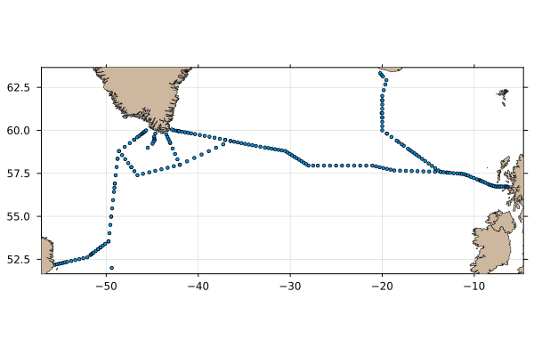

Examples
Satellite SST
The AMSR satellite provides several data streams, including sea-surface temperature, which may be plotted as follows.
# North Atlantic Sea Surface Temperature
using OceanAnalysis, Plots
f = get_amsr("2025-09-07");
a = read_amsr(f, "SST");
plot_amsr(a, xlims=(290.0, 360.0), ylims=(20.0, 60.0), color=:turbo,
levels=0.0:2.5:30.0, clim=(0, 30))
#savefig("amsr.png")
Topography
The following downloads topographic data for a domain including southern Nova Scotia, and plots in three plot styles.
using OceanAnalysis, Plots, TiffImages
topo_file = get_topography(-67, -63, 43, 46, resolution=1)
topo = read_topography(topo_file);
p1 = plot_topography(topo, domain=:both);
p2 = plot_topography(topo, domain=:sea);
p3 = plot_topography(topo, domain=:land);
plot(p1, p2, p3, layout=(1, 3), size=(800, 200), dpi=300)
#savefig("topography.png")
CTD hydrography
The following shows how to read a built-in CTD file, and plot some hydrographic diagrams.
# Read and plot a built-in CTD file
using OceanAnalysis, Plots, Measures, Dates
filename = joinpath(dirname(dirname(pathof(OceanAnalysis))),
"data", "ctd.cnv")
ctd = read_ctd_cnv(filename)
p1 = plot_profile(ctd, which="CT");
p2 = plot_profile(ctd, which="SA");
p3 = plot_profile(ctd, which="sigma0");
p4 = plot_TS(ctd);
title = "CTD observations at " *
"$(round(ctd.metadata["latitude"],digits=3))N and " *
"$(round(ctd.metadata["longitude"],digits=3))E" *
" on $(Dates.format(ctd.metadata["time"], "yyyy-mm-dd"))"
plot(p1, p2, p3, p4, layout=(2, 2), size=(800, 600), margin=0.25cm,
dpi=200, plot_title=title, plot_titlefontsize=11)
#savefig("ctd_diagram.png")
Argo search
The following shows how to map Argo profile locations made within 200 km of Sable Island, during the past year. It also prints the IDs of those floats.
# Show Argo profiles within 200 km of Sable Island in last year
using OceanAnalysis, CSV, Dates, DataFrames, Plots
# Get the index
index_file = get_argo_index("~/data/argo")
index_all = read_argo_index(index_file) # 3.2e6 profiles
# Set time subset
today = now(UTC)
start = today - Dates.Year(1)
recent = start .< index_all.time .< today
# Set distance subset
SI_lon = -59.915
SI_lat = 43.934
radius = 200.0 # km
distance = map(i -> geod_distance(SI_lon, SI_lat,
index_all.longitude[i], index_all.latitude[i]),
1:nrow(index_all))
near = distance .< radius
# Filter by both time and distance
index = index_all[recent.&near, :]
# Extend region of map to show geographic context
aspect_ratio = 1.0 / cos(SI_lat * pi / 180.0)
scale = radius / 111.
scatter(index.longitude, index.latitude,
xlims=SI_lon .+ scale .* (-1.2, 1.2) .* aspect_ratio,
ylims=SI_lat .+ scale .* (-1.2, 1.2),
aspect_ratio=aspect_ratio,
tickdirection=:out, framestyle=:box, dpi=200, legend=false)
plot_coastline!(coastline())
float_IDs = replace.(index.file, r".*/(.*)_.*" => s"\1") |> unique
title!("$(length(index.file)) profiles of $(length(float_IDs)) floats", titlefontsize=9)
scale_bar(100, :right, :top)
#savefig("argo_search.png")
Argo trajectory
The following shows how to display a trace of the positions of a single Argo float.
# Plot a float trajectory with colour for sequence number
using OceanAnalysis, Plots, Statistics
ID = r"D4902911" # focus on this ID
index_file = get_argo_index("~/data/argo");
index_all = read_argo_index(index_file) # 3.2e6 profiles
index = index_all[occursin.(ID, index_all.file), :]
sort!(index, :time) # this lets us join dots in time order
lon, lat = index.longitude, index.latitude
plot(lon, lat,
aspect_ratio=1.0 / cos(mean(lat) * pi / 180),
framestyle=:box, color=:gray, dpi=200,
title="Argo float $(ID.pattern) coloured by cycle index", titlefontsize=9)
colors = cgrad(:turbo)
scatter!(lon, lat, marker_z=1:length(lon),
markersize=3, markerstyle=:circle, color=colors)
# Add land and 1km isobath
plot_coastline!(coastline())
topo_file = get_topography(-110., -30, 20, 60, resolution=30,
destdir="~/data/topo")
topo = read_topography(topo_file)
contour!(topo.metadata["longitude"], topo.metadata["latitude"],
topo.data, xlim=xlims(), ylim=ylims(),
color=:gray, linewidth=2, colorbar_entry=false, levels=[-1000.0])
scale_bar(500, :right, :top)
#savefig("argo_trajectory.png")
Oceanographic section
The following downloads an oceanographic section that has CTD files in WOCE format. (See https://cchdo.ucsd.edu for paths to other sections.) Then, after reading those CTD files into a Section object, it draws a map of the locations of the CTD profiles.
using OceanAnalysis, Plots
url = "https://cchdo.ucsd.edu/data/11852/ar07_74JC20140606_ct1.zip"
dir = get_section(url)
section = read_section(dir);
plot(section, "map")
#savefig("section_map.png")